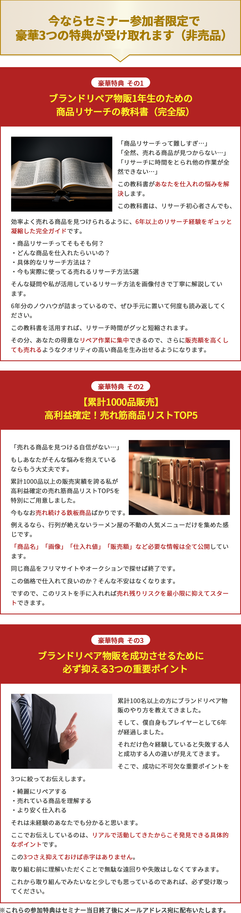
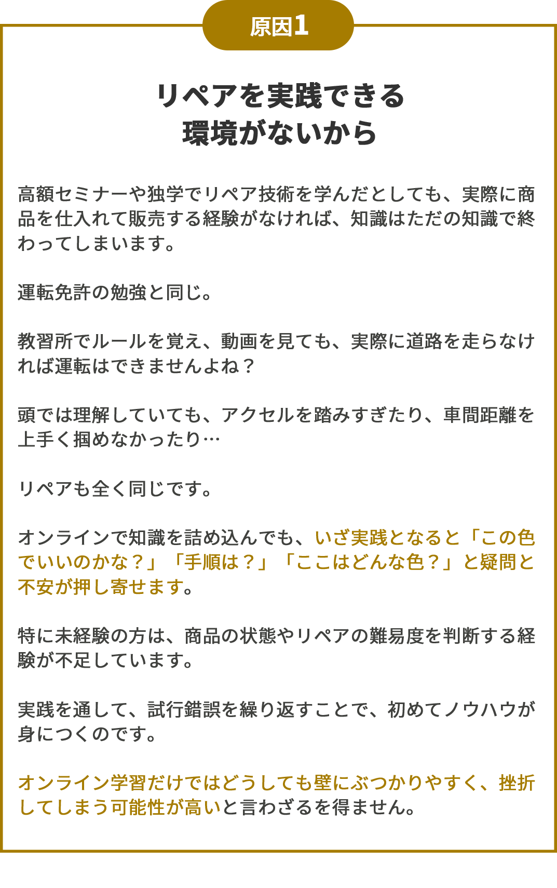
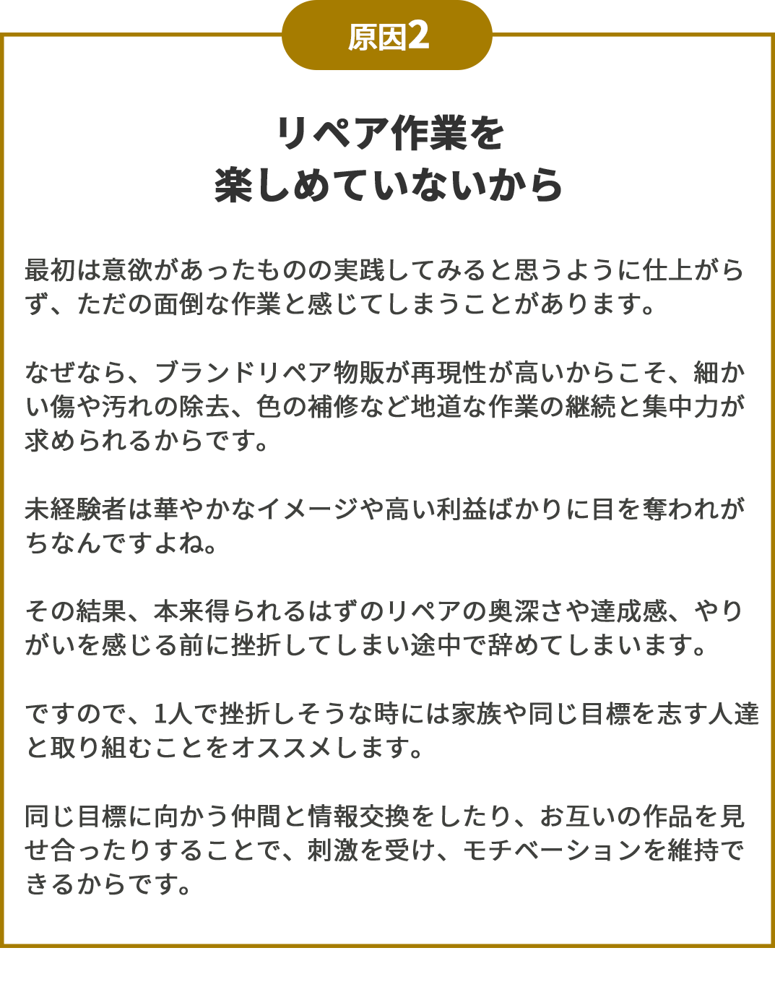
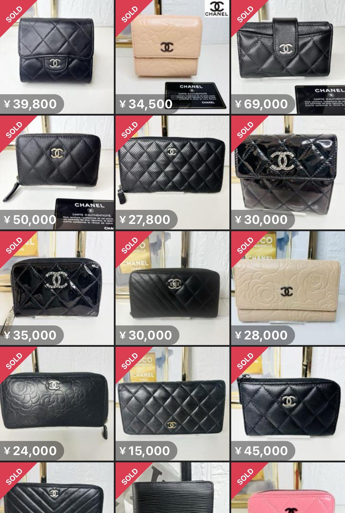
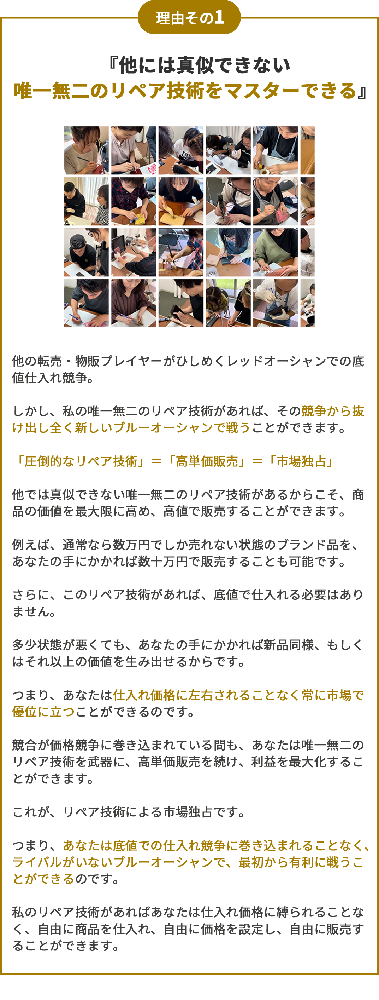
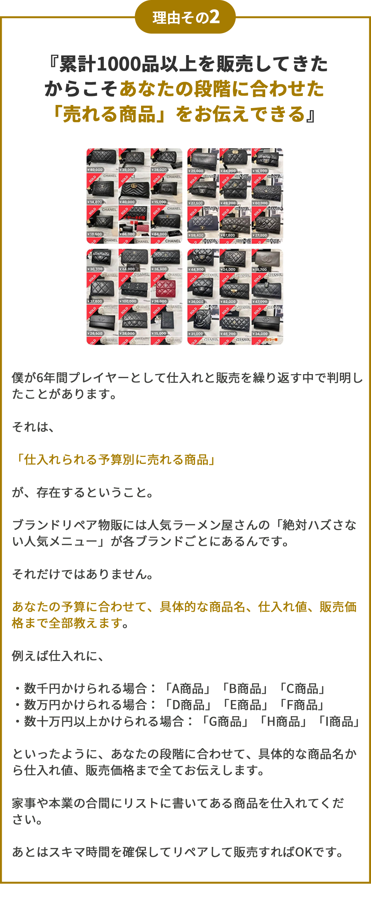
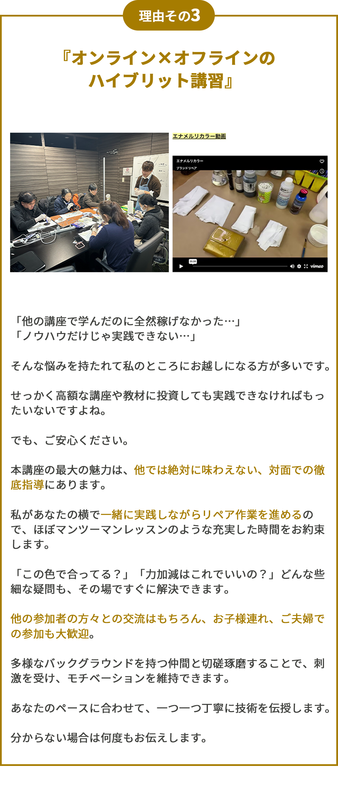

これから一歩踏み出す前に、
この残酷な事実を
知っておいて欲しい..

改めまして、ブランドリペア物販スペシャリストの小堀 潤です。
この度は、無料オンライン講座にご登録いただき誠にありがとうございます。
あと1つだけ、大切なお知らせがあります。
もしあなたがブランドリペア物販を通して老後も楽しく毎月10万円・30万円・50万円と好きな時に収入を生み出せる真のスキル・安定が欲しいと少しでも考えているのであれば、ほんの2、3分だけ時間をとってこのページ最後までお読みください。
なぜならこのページでお伝えするのは、知識ゼロ・経験ゼロの状態からより短期間で、より確実にブランドリペア物販を成功させるためのリペア技術はもちろん、仕入れから販売、事業拡大まで全てをマスターできる方法をお伝えするからです。
おかげさまで、私はこれまでに累計100名以上の方に未経験の状態から0→1を突破するための方法をお伝えしてきました。
そこで気付いたことがあります。
それは、
「自己流で頑張っているけど一向に結果が出ない or 他のブランドリペア物販講師から教わっているけど全然成果につながっていない」
こういった人が多すぎる。
そんな残酷な事実です。
なぜ、そうなってしまうのか？
未経験から取り組み
ブランドリペア物販で
成果を出せない
3つの原因とは？


3つの原因をお伝えしました。
ある共通点にお気づきになられたかもしれません。
そうです。
『全ての原因にリペア』が含まれています。
ブランドリペア物販はリペアが成功要因の7割を占めます。
ここさえ技術をマスターしてしまえば、僕の経験則から失敗するなんてことはありません。
仕入れがどうとか、写真撮影がどうとか、ありますがそれはほぼ型があります。
ですので、誰でも問題なくパパッとできるようになるのでご安心ください。
これから取り組んでみようと検討している方はこの『リペアの質、技術』を肝に銘じて取り組んでいただければと思います。
それさえできれば、スキマ時間で毎月5万円、30万円、50万円と収入を得ていただくことはもちろん、一生モノのスキルを手にいれていただけます。
ただ、これまで累計100名以上の方にブランドリペア物販をお伝えさせていただいた背景から、質の高いリペア技術をマスターできるところがないんです。
そこで私からあなたに、1つご提案があります。
現役TOPプレイヤーとして累計1000品以上の売買をして未経験の方々を含めて100名以上にゼロからやり方をお伝えした私と一緒に対面でリペアを楽しく実践しながら取り組めるとしたらどうですか？
それであれば、リペアに自信がない、経験がない場合でも成功させることができそうだと思いませんか？
そこで今回このページに興味を持ってくださっているあなたに、特別なご案内をさせてください。
単刀直入に言いますと、、、
唯一無二のリペア技術は
もちろん、
成功に必要なモノが
全て手に入り
第2の安定収入をリスクなく
最短で構築する
”ブランドリペア物販
完全マスター講座”
を、開催することが決まりました。
このブランドリペア物販 完全マスター講座は一言で言えば、
難しいパソコン作業や期限、ストレスな人間関係もなし。
『ブランドリペア物販を全くの未経験から成功させるために、必要なモノ（仕入れ、リペア、販売方法、材料、リピート戦略、外注化戦略、事業拡大方法etc...など)を全て実践ベースでマスターしていただける方法』
です。
成功させるために最も重要な唯一無二のリペア技術を対面でお伝えします。
それだけではありません。
仕入れやリペア、販売方法などのノウハウはマニュアルとして動画講義と資料で体系化しています。
ですので、ご自宅でも繰り返し何度も何度も取り組んでいただくことが出来ます。
好きな時に好きな場所で好きなタイミングでご覧いただけます。
リペア技術を完全にマスターする対面講習と好きなタイミングで繰り返し復習できるオンライン動画マニュアルを組み合わせることで全くの初心者の方でもリスクは極力ゼロで最短でブランドリペア物販を成功させられると確信しています。
他にも、、、
・独学では決して身につけられない唯一無二のリペア技術をマスターできる
・今後プレイヤーが激化してもあなたから購入し続けられるやり方を身につけられる
・フェーズごとにどの商品を仕入れればいいのか分かる
・毎月10万円〜50万円以上の収入を得るための方法をマスターできる
・ブランドリペア物販を最短で軌道に乗せ、成功させる方法が分かる
・仕入れから販売までの全工程のスキルを身につけられる
・来月には2つ目の収入源を確保していただくことが可能になる
これらは今回の講座で得ていただけるほんの一部です。
...と言っても、信じられないお気持ちはわかります。
ですので、 「なぜそんな数値や成果を実現できるのか?」
その明確な理由や証拠をこれから解説していきます。
ブランドリペア物販に
取り組み
スキマ時間で
新しい収入源を
手に入れた方々の
嬉しいお声をご紹介
あの夜のことを、今でもはっきりと覚えています。
深夜の布団の中でゴロゴロしながら何気なくスマートフォンを見ていた時に偶然、小堀さんの情報を見つけました。
「家族がいるのに、新しいことを始めて本当に大丈夫だろうか…？」
正直に申し上げますと、最初は不安でいっぱいでした。
特に、家族を持つ身としてはなおさらです。
でも、妻は「やりたいなら、話をだけでも聞いてくれば」と、背中を押してくれました。
もちろんリペアの経験などありませんでした。
「私のような素人に、本当にできるのだろうか…？」と、自信を持つことができませんでした。
初めてリペアした時はボロボロだったブランド品が自分の技術で本当に綺麗になったことに驚いて、記念に写真を撮ったことを覚えています（笑）
しかし、取り組んでいくなかで一つ、また一つと商品が売れるにつれてその不安は少しずつ喜びに変わっていきました。
そして、利益が10万円、15万円…と増え、3ヶ月後には20万円を超えるまでになりました。
その時、「これなら、きっとうまくいく」と、確信に変わったのです。
今はまだ会社員ですが、このビジネス一本で生計を立てていきたいと考えています。
おかげさまで、家族との時間も増えました。
以前は難しかった外食や旅行、子供たちへのプレゼントも、今ではできるようになりました。
本当に幸せなことだと、日々感謝しております。
あの時、勇気を出して一歩踏み出していなければ、今の私はありませんでした。
【販売実績の一部】

※上記は個人の感想で効果を保証するものではありません
あの頃、ちょうど「老後2,000万円問題」が話題になっていた時期でした。
年金だけでは生活が厳しいと言われ、漠然とした不安を抱えていたのを覚えています。
「自宅でできる、何か良い仕事はないかしら…」
そう思っていた時、娘婿（私の奥さん）がブランド品のリペアでかなりの収入を得ているという話を聞きました。
「もしかしたら、私にもできるかもしれない…」そんな淡い期待を抱いたのが、すべての始まりです。
私は、絵を描いたり筆を持ったりすることが好きでした。
だから、好きなブランド品を自分の手で蘇らせることができるなんて、まるで夢のような話に思えたのです。
それまでの私の人生でブランド品のリペアなど、全く縁のない世界でした。
ですから、何もかもが新鮮で胸が躍るような気持ちでした。
初めて売れた時の喜びは、今でも忘れられません。
お客様から「綺麗になりました！ありがとう」というお声をいただいた時は、それが何よりの励みになりました。
今でこそ慣れましたが、始めたばかりの頃は楽しくて夜も眠れないほどでした（笑）
そうそう、リカラーができるようになって、思わぬ副産物もありました。
家族の財布や、子供たちのスポーツシューズ、そして私自身のバッグも、自分で綺麗にできるようになったのです。色々な面で節約にもなり、本当に良いことばかりです（笑）
【販売実績の一部】
※上記は個人の感想で効果を保証するものではありません
「給料、上がらない…でも、収入は増やしたい…」
そんな思いから数年前から副業に取り組み始めました。
最初は、eBayでカメラ輸出に挑戦。
でも、為替の問題もあって利益が出なくてすぐに撃沈…。
次に、Amazon物販にも取り組みました。
これも、売上の波が激しすぎて安定収入には程遠くやめました。
そんな物販副業を転々としていた時に出会ったのが「ブランドリペア物販」だったんです。
最初は「塗る」作業に苦戦しましたが、慣れれば簡単でした。
中古品は、新品とは違い価格競争に巻き込まれることなく、リペアの腕次第で価値が大きく変わります。
そんなリペア未経験の僕でも平日は1時間程度、日曜日にまとまった時間を確保して月30万円を安定して稼げるようになりました。
アルバイトで5万円、10万円を稼ぐのは、本業があるとほぼ無理だと思います。
でも、ブランドリペア物販なら商品3、4つをリペアして販売すれば達成できる可能性があります。
自宅で音楽や映画を楽しみながらでもできるので、体力に自信がない方、時間がない方にもオススメです。
【販売実績の一部】
※上記は個人の感想で効果を保証するものではありません
『ブランドリペア物販
完全マスター講座』
他にはない3つの特徴とは？



少しでもご興味を
持たれたのであれば、
まずは実践セミナー&
説明会に
ご参加ください
「無料オンライン講座とは何が違うのか？」
そんな疑問を持たれているのではないでしょうか。
簡単に2つの違いについてご説明させていただきます。
無料オンライン講座では「ブランドリペア物販の全体像や知識編」
実践セミナー&説明会では「ブランドリペア物販の実践編」
についてお伝えしていきます。
というのも、無料オンライン講座ではどうしても時間や本数の関係などから全体像や知識部分の話が多くなってしまい実践部分は少ししかお話しすることができないからです。
さらに、今回の実践セミナーは
①「主婦・会社員・職人」
②「物販事業者」
③「新規事業・経営者」
に分けて開催します。
そうすることで、あなたに関係のない情報をお届けすることなく、具体的な今すぐ実践で使える有益な情報だけをお伝えできるからです。
きっと、参加して良かったと思っていただけると確信しております。
確かに、今回の実践セミナーは説明会と名前にもあるとおり、「ブランドリペア物販 完全マスター講座」のご案内も兼ねています。
とはいえ、安心していただきたいのは、、、
「無理な勧誘がある」
「強制的に販売される」
「電話営業が後々にくる」
といった”押し売り”のようなセールスは致しません。
あくまで、お互いが納得した上で本講座にご参加いただけることが、あなたにとっても、私にとっても理想の状態です。
ここまで文章を読んでいただいているということは、ブランドリペア物販に取り組むことを前向きに検討していただけているのではないでしょうか？
他ではまず知り得ない貴重な情報・成功事例も得られることをお約束します。
では、どういったことを実践セミナーではお伝えするのか？
「ブランドリペア物販
実践マスター講座」
実践セミナー&説明会で
お伝えする
一部をご紹介
-
【実例】私が平日の作業ゼロで土日の作業だけでどのように年間500万円の副収入を実現したのか？
-
累計1000品以上の売買の経験で掴んだ、高利益リペア商品の共通点とリペア物販で絶対に外せない3つの鉄則
-
【初公開】私が普段から使用しているリペアグッズを全公開
-
商品リサーチから仕入れ、リペア手順、写真撮影、販売までの流れを具体的に解説します
-
初心者が最初で転げないために事前に知っておきたいリペア物販5つのこと
-
価格競争やスピード勝負の仕入れに巻き込まれることがない、ライバル不在のある仕入れ市場とは？
-
ライバルが増えても一切関係なくあなたから購入したい、そんなリピーターを生み出す独自のリペア＆販売戦略
セミナーの
お申し込み方法は
たったの3ステップです！
参加費
■通常価格5,000円
・実践セミナー＆説明会＆の参加費は通常5,000円ですが、
先行案内として早割価格でご参加頂けます。
※3月26日（水）まで
・各会場の定員数10名に到達次第、受付終了となりますので、
ご検討されている方は、ぜひお早めにお申し込みください。
支払い方法
①クレジットカード払い
②銀行振り込み
※クレジットカードでのお支払いに関しましては領収書の発行は致しかねます。
※クレジットカード会社から発行される明細書をご利用ください。
※クレジットカードのご決済にはPayPalアカウントが必要になります。
（無料で作成できますので、お手数ですがご対応をお願い致します）
※銀行振り込みの場合はお申込み後に口座情報をお伝えいたします。
キャンセルについて
参加確定後のお客様の都合のキャンセル＆ご返金は原則承っておりません。
ご入金または参加確定メールをもって、ご参加確定となります。
参加時の注意点
・遅刻や途中退出は厳禁
・セミナー当日はメール記載のZOOMリンクよりご参加ください。
・パソコン、スマホ、タブレットにてご参加頂けます。
・必ず本名にてご参加ください。
・セミナー時間は少し予定終了時刻を超えることもありますので、スケジュールに余裕を持ってご参加ください
・必ずカメラをオンにしてのご参加をお願いしております。
※カメラが壊れている方は壊れていないデバイスで参加下さい。
※持っていない方は参加できません
追伸
私の「ブランドリペア物販」への想いを聞いてください。
私自身、かつては平凡なサラリーマンでした。
妻と子供たちとの時間もろくに取れず、将来への不安を抱えながら、ただ毎日を過ごしていました。
そんな時、妻の妊娠をきっかけに、
「このままではダメだ」と強く感じ、
副業を始めることを決意しました。
しかし、FXやせどりなど、様々な副業に挑戦するも、なかなか上手くいかず、時間だけが過ぎていきました。
そんな時、偶然出会ったのが「ブランドリペア物販」だったんです。
最初は数万円だった副収入が、みるみるうちに増え続け、気づけば年間500万円、ついには本業の収入をも超えてしまったんです。
『あの時の私と同じように、時間やお金に悩む人を救いたい』
私が「ブランドリペア物販 完全マスター講座」を開講したのは、そんな想いからです。
今、日本は不況と言われています。
しかし、そんな時代だからこそ、自分の力で生涯稼ぎ続けられるスキルを身につけることが大切だと私は考えます。
私1人でリペアできるブランド品には限りがあります。
しかし、私のノウハウをあなたにお伝えすることで、より多くの人が経済的な自由を手に入れることができる。
私と同じように、時間やお金に悩む人に、この素晴らしい方法を知ってほしい。
それが、私の願いです。
ブランドリペア物販は、正しい知識と技術を身につければ誰でも私と同じように収入を得られる再現性高いビジネスです。
最後に、この言葉を贈ります。
「未来を変えるのは、今のあなただけ」
あなたと実践セミナー&説明会でお会いできることを、心から楽しみにしています。
小堀 潤
よくある質問
Q.実践セミナー&説明会では、必ず顔出ししないとダメですか?
A.今回のセミナーは顔出し必須となります。というのも説明会中は質問に答えていただいたり、参加者の方とやり取りをしながら進めていく場面が多いからです。
もし、パソコンにカメラ機能がついていない、やり方が分からない方は事前に事務局にご相談ください。
Q.オンラインでセミナーに参加したことがありません
A.オンラインでの開催になります。ZOOMというアプリを使用します。インターネット環境さえあればどこからでもご参加可能です。1回も利用したことがない場合でも運営事務局が具体的にサポートしますのでご安心ください。
Q.申し込んだのですが、当日の参加方法がわかりません
A.お申し込みいただいたメールアドレス宛に2日以内にメールが送られます。そちらのメールに当日の実践セミナー&説明会のZOOMリンクが掲載されていますので、当日時間になりましたらそちらのリンクをクリックしてご参加ください。
Q.本業が忙しくて時間があまり取れないのですが本当にできるでしょうか？
A.問題なく出来ます。私も含めてこれまでも多くの会社員や主婦の方が取り組んで成果を出しているからです。1日に30分程度の時間が確保できればOKです。また、確保が難しい場合でも土日で集中して行うことも可能です。
Q.説明会をキャンセルした場合、参加費は返金されますか?
A.お支払い後のご返金は原則承っておりません。しかし、お申し込み日に参加出来なかった場合は別日程のお振替にてご案内させて頂いております。詳細は事務局までお問い合わせください。